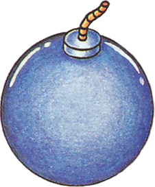
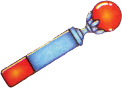
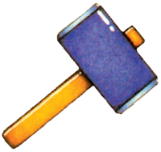
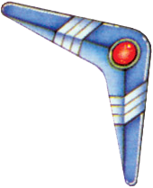
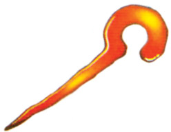
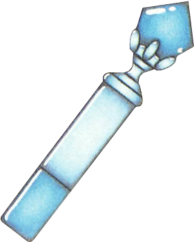

09 元素协同——一物多用设计
核心问题
- ALttP 的物品如何在三个系统（解谜/探索/战斗）之间产生协同效应——同一个操作、同一个按键，在不同语境下完成截然不同的功能？
- 这种"一物多用"是设计师刻意规划的结果，还是硬件约束逼迫下的被动选择——答案对今天的游戏设计者有什么启示？
交互矩阵
以下对六个高协同度物品和四个中协同度物品分别列出它们在三个系统中的全部已知交互。每个交互标注使用频率（核心/偶发）和是否为该物品获取所在地下城的解谜必需操作。
高协同度物品
1. Hookshot（钩爪）
| 系统 | 交互行为 | 频率 | 备注 |
|---|---|---|---|
| 解谜 | 跨越悬崖/深坑到达对面平台 | 核心 | Swamp Palace 核心机制，多处地下城复用 |
| 解谜 | 将远处宝箱/心之碎片拉向自己 | 核心 | 需要判断距离，部分位置需从特定角度发射 |
| 解谜 | 远程触发开关（通过钩爪可命中的机关） | 偶发 | 少量房间将钩桩与开关组合 |
| 解谜 | 拉取Arrghus的保护泡（Boss战解谜阶段） | 核心 | Boss Arrghus 的必需操作 |
| 探索 | 跨越表世界悬崖到达新区域 | 核心 | 多处表世界/Dark World 悬崖需要钩爪通过 |
| 探索 | 通过水域上方的钩桩摆荡过水 | 核心 | 替代绕路，开放捷径 |
| 探索 | 拾取远处可见但不可步行到达的道具 | 偶发 | 心之碎片、卢比等 |
| 战斗 | 眩晕敌人（短时间硬直） | 核心 | 对绝大多数普通敌人生效 |
| 战斗 | 一击击倒部分弱敌（Keese、Octorok等） | 偶发 | 低HP敌人的直接击杀手段 |
| 战斗 | 远距离拾取敌人掉落物（不冒险走入危险区） | 偶发 | 掉落物自动飞向玩家 |
协同度评估：10项交互，三个系统各有核心交互。钩爪是整个游戏中连接系统最多的单一物品。
场景走查：Hookshot 的30分钟教学链
Hookshot 是最好的"协同教学链"案例，因为它在获得后的30分钟内让玩家连续体验三种系统的用途，且每次使用都建立在上一次的基础上：
第1分钟（解谜）：在 Swamp Palace 获得 Hookshot 后，立即面对一条无法跳过的水域悬崖。使用Hookshot钩住对面的钩桩摆荡过去——纯解谜，零威胁，教学性质。
第10分钟（解谜进阶）：同地下城后续房间，需要在有敌人的环境中用Hookshot跨越更复杂的悬崖组合。难度上升但仍然是解谜主导。
第20分钟（Boss战）：面对 Boss Arrghus，需要用Hookshot逐一拉掉包围Boss的保护泡——这是对"拉取"功能的非直觉应用（之前拉的是固定物体，现在拉的是移动的活物），且有时间压力。
第30分钟（探索）：离开Swamp Palace回到表世界，发现附近有一处之前到不了的悬崖。现在可以用Hookshot跨越——第一次在非地下城环境中使用，且用途从"设计者预设的谜题"变为"玩家自主的探索决策"。
这30分钟的节奏完美映射了06_谜题设计的教学→应用→精通三阶段，但跨越了三个系统（解谜→战斗→探索），而非局限在单个地下城内。

2. Bomb（炸弹）
| 系统 | 交互行为 | 频率 | 备注 |
|---|---|---|---|
| 解谜 | 炸开可破坏的墙壁（出现裂缝的墙） | 核心 | 几乎每个地下城都有可炸墙壁 |
| 解谜 | 炸开地面洞穴入口 | 偶发 | 部分地下城有多层结构 |
| 解谜 | 破坏Helmasaur King的面具（Boss战解谜阶段） | 核心 | Boss 战必需操作 |
| 探索 | 炸开表世界的隐藏洞穴（无裂缝提示的墙） | 核心 | 部分隐藏入口无视觉线索，需要试炸或 bombing 检查 |
| 探索 | 破坏特定地形障碍（岩石堆等） | 偶发 | 少数特定位置 |
| 战斗 | 范围伤害对付集群敌人 | 核心 | 炸弹爆炸有AoE判定 |
| 战斗 | 对付特定Boss（Helmasaur King面具阶段） | 核心 | Boss 战必需 |
| 战斗 | 对付移动缓慢的强敌（Dark World 士兵群） | 偶发 | 炸弹对部分士兵造成较高伤害 |
协同度评估：8项交互。炸弹的特点是"从游戏第一分钟到最终Boss始终有用"，是贯穿性最强的消耗品。

3. 弓/银箭
| 系统 | 交互行为 | 频率 | 备注 |
|---|---|---|---|
| 解谜 | 射击远处的眼睛开关 | 核心 | 多个地下城的核心谜题元素 |
| 解谜 | 射击水晶开关（远距离翻转） | 偶发 | 替代近身击打，创造路径规划空间 |
| 探索 | 射击远处机关打开表世界通路 | 偶发 | 少量表世界机关需要远程触发 |
| 战斗 | 远程攻击（安全距离消灭敌人） | 核心 | 消耗箭矢的高伤害远程手段 |
| 战斗 | 银箭是对Ganon的必需武器 | 核心 | 最终Boss战的核心道具 |
协同度评估：5项交互。弓的协同度不如钩爪广泛，但它在进度链条上的位置极为关键——是第一个获得的核心地下城物品，也是最终Boss战的必需品。

4. Fire Rod（火焰杖）
| 系统 | 交互行为 | 频率 | 备注 |
|---|---|---|---|
| 解谜 | 点燃火盆（地下城内常见的锁门机关） | 核心 | Skull Woods 及后续多个地下城 |
| 解谜 | 融化冰块 | 核心 | Ice Palace 及特定谜题 |
| 解谜 | 破坏Kholdstare的冰壳（Boss战解谜阶段） | 核心 | Boss 战必需操作 |
| 探索 | 点燃表世界特定位置的火盆触发事件 | 偶发 | 少量表世界机关 |
| 战斗 | 远程火焰攻击（持续伤害判定） | 核心 | 消耗魔法但对弱火敌人效果显著 |
| 战斗 | 对冰系敌人/Boss造成高额伤害 | 核心 | Kholdstare、Trinexx火头等 |
协同度评估：6项交互。火焰杖是"元素属性"设计的代表——火焰这一物理属性天然暗示了"点燃/融化/伤害"三种功能。

5. Magic Hammer（魔法锤）
| 系统 | 交互行为 | 频率 | 备注 |
|---|---|---|---|
| 解谜 | 砸桩开关（Hammer Peg）改变地形 | 核心 | Palace of Darkness 核心机制 |
| 解谜 | 砸碎栅栏 | 偶发 | 部分房间有可破坏的木栅 |
| 解谜 | 砸碎Helmasaur King的面具（Boss战解谜阶段） | 核心 | Boss 战必需操作（与炸弹二选一） |
| 探索 | 砸开表世界的桩进入新区域 | 核心 | 多处Light World/Dark World 有桩阻挡 |
| 探索 | 砸碎迷宫入口附近的地形障碍 | 偶发 | 配合新区域发现 |
| 战斗 | 近战攻击（范围比剑大，可砸地面） | 核心 | 攻击判定在角色周围一圈 |
| 战斗 | 对Boss面具造成破坏 | 核心 | Helmasaur King 必需 |
协同度评估：7项交互。锤子在"表世界探索钥匙"维度表现突出——Light World 中多处可见但不可通过的桩直接驱动玩家在获得锤子后回去探索。

6. Boomerang / Magical Boomerang（回旋镖）
| 系统 | 交互行为 | 频率 | 备注 |
|---|---|---|---|
| 解谜 | 击打远处开关（水晶开关/地面开关） | 偶发 | 替代弓箭的远程触发，但威力更低 |
| 解谜 | 击打远处道具/物品使之掉落或移位 | 偶发 | 少量特定谜题 |
| 探索 | 击落远处树上/高处的道具 | 偶发 | 与Pegasus Shoes的撞树功能互补 |
| 探索 | 拾取远处掉落物（回旋镖带回） | 核心 | 自动拾取飞回路径上的掉落物 |
| 战斗 | 眩晕敌人（短时间硬直） | 核心 | 对绝大多数普通敌人生效 |
| 战斗 | 击杀极弱敌人（Keese、Buzzblob等） | 偶发 | 低伤害但有概率触发 |
| 战斗 | 拾取战斗中的掉落物（安全拾取） | 核心 | 在危险区域远程拾取 |
协同度评估：7项交互。回旋镖是"低门槛多功能"的典型——单项交互的强度都不高，但覆盖面广、使用成本极低（无消耗），适合作为早期物品。
中协同度物品

7. Cane of Somaria（索马里亚之杖）
| 系统 | 交互行为 | 频率 | 备注 |
|---|---|---|---|
| 解谜 | 生成方块压住地面开关（持续触发） | 核心 | Misery Mire 核心机制，替代推石 |
| 解谜 | 方块垫脚跨越深坑/悬崖 | 偶发 | 部分房间需要临时垫脚平台 |
| 解谜 | 方块阻挡移动敌人/陷阱路径 | 偶发 | 创造临时屏障 |
| 战斗 | 方块阻挡敌人移动路线 | 偶发 | 临时掩体效果 |
| 战斗 | 方块爆炸（特定操作后对周围造成伤害） | 偶发 | Misery Mire 中有此用途 |

8. Ice Rod（冰冻杖）
| 系统 | 交互行为 | 频率 | 备注 |
|---|---|---|---|
| 解谜 | 冻结水面制造临时平台 推测 | 偶发 | 非必需但有此交互 |
| 战斗 | 冻结敌人（完全定身） | 核心 | 对普通敌人生效 |
| 战斗 | 冻结敌人后用锤击碎（一击必杀组合） | 核心 | 与Magic Hammer的联动组合 |
| 战斗 | 配合其他攻击对冻结敌人造成额外伤害 | 核心 | 冻结状态下的敌人受到的攻击伤害提升 |
| 战斗 | 对Trinexx冰头造成高额伤害 | 核心 | Boss 战中角色分工 |
9. Lamp（灯）
| 系统 | 交互行为 | 频率 | 备注 |
|---|---|---|---|
| 解谜 | 照亮黑暗房间（Palace of Darkness必需） | 核心 | 无灯则黑暗房间视野为零 |
| 解谜 | 点燃火盆打开门 | 核心 | 作为Fire Rod的早期替代品 |
| 探索 | 照亮洞穴/暗处 | 偶发 | 表世界少量暗处 |
| 战斗 | 微弱近战攻击（挥灯造成少量伤害） | 偶发 | 火焰近距离伤害判定 |
10. Pegasus Shoes（飞马鞋）
| 系统 | 交互行为 | 频率 | 备注 |
|---|---|---|---|
| 解谜 | 冲刺撞破可破坏的墙壁/障碍 | 核心 | 部分地下城有仅冲刺可破的障碍 |
| 探索 | 撞击树木掉落隐藏物品 | 核心 | 表世界大量树木有隐藏掉落 |
| 探索 | 冲刺加速穿越危险区域 | 偶发 | 快速通过敌人密集区 |
| 战斗 | 冲刺斩（配合剑使用） | 核心 | 带无敌帧的突进攻击 |
| 战斗 | 直接撞击敌人造成伤害/硬直 | 偶发 | 撞击本身有伤害判定 |
低协同度但关键的进度门物品
| 物品 | 交互数 | 性质 |
|---|---|---|
| Magic Mirror | 1（Dark→Light世界切换） | 纯探索工具，但双世界系统的核心枢纽 |
| Moon Pearl | 1（Dark World保持人形） | 纯进度门，无其他交互 |
| Power Glove / Titan's Mitt | 2（搬起石头解锁区域/搬石头砸敌人） | 探索为主，战斗为辅 |
| Zora's Flippers | 2（游泳探索/水中闪避） | 探索为主 |
设计分析
1. 约束→创新的因果链
ALttP 的"一物多用"设计并非偶然。它可以从一条清晰的因果链推导出来：
约束→创新因果链：按键限制迫使设计师让每个道具承担更多功能，催生一物多用设计
这条因果链的关键推论是：按键限制不是要解决的问题，而是产生好设计的约束条件。如果 SNES 手柄有 20 个按键，设计师可以为每种场景设计专用工具。结果是每个物品只有单一用途，物品之间没有协同，三个系统各自独立运作——游戏可能依然"能玩"，但绝不会产生"钩爪既能解谜又能战斗又能探索"的化学反应。
04 进度系统（按键限制与物品系统设计的关系）
2. 枢纽节点识别
将所有物品按"连接的系统数量"排序：
| 排名 | 物品 | 解谜交互数 | 探索交互数 | 战斗交互数 | 总交互数 |
|---|---|---|---|---|---|
| 1 | Hookshot | 4 | 3 | 3 | 10 |
| 2 | Bomb | 3 | 2 | 3 | 8 |
| 3 | Magic Hammer | 3 | 2 | 2 | 7 |
| 4 | Boomerang | 2 | 2 | 3 | 7 |
| 5 | Fire Rod | 3 | 1 | 2 | 6 |
| 6 | Pegasus Shoes | 1 | 2 | 2 | 5 |
| 7 | 弓/银箭 | 2 | 1 | 2 | 5 |
| 8 | Ice Rod | 1 | 0 | 4 | 5 |
| 9 | Cane of Somaria | 3 | 0 | 2 | 5 |
| 10 | Lamp | 2 | 1 | 1 | 4 |
Hookshot 是第一枢纽——它以 10 项交互领先第二名

（Bomb）2 项，且三个系统各有至少 3 项核心交互。钩爪之所以成为枢纽，根源在于它的核心机制——"向目标发射并拉回/拉向目标"——天然暗示了三种用途：
- 拉向目标 → 跨越空间（探索/解谜）
- 拉回目标 → 拾取远物（探索/战斗）
- 命中目标 → 对敌人产生效果（战斗）
这三种用途共享完全相同的操作（按A键向目标方向发射），玩家不需要学习三种不同的操作，只需要理解一种操作的多种语境。
Bomb 是第二枢纽——虽然单项交互不如钩爪丰富，但炸弹是全游戏唯一从第一分钟到最终Boss都有核心用途的物品。它的特殊性在于消耗品机制：炸弹不是永久装备，而是有限的资源。这使得每次使用都构成一个决策——"这个墙壁值得炸吗？还是留着对敌人用？"
3. 协同的层级：预设联动 vs 自然涌现
将所有交互按"设计者意图的明确程度"分为三个层级：
层级一：显式预设的联动（设计者直接编码的"用X对付Y"）
- Boss 战道具需求：Helmasaur King 需要 Bomb/Hammer 破面具，Arrghus 需要 Hookshot 拉保护泡，Trinexx 需要 Fire Rod + Ice Rod 灭两头
- 表世界进度门：Power Glove 搬石头、Hammer 砸桩、Hookshot 跨悬崖、Flippers 游泳——每个区域入口对应一个特定物品
- 地下城核心机制：每个地下城的新物品就是该地下城谜题的核心钥匙
这些联动是"硬编码"的——设计者明确设计了"A物品必须在B场景使用"的关系。玩家体验到的不是"我发现了新用法"，而是"设计者就是要我这样用"。
层级二：规则自然延伸的联动（一套规则在不同语境下自然生效）
- Hookshot 眩晕敌人：钩爪的"命中目标产生效果"规则对敌人也生效，效果是短时间硬直。这不需要为每个敌人写专门的"被钩爪命中"代码——统一使用"被击中→硬直"的通用规则
- Boomerang 远程拾取掉落物：回旋镖的"飞回时携带路径上的物品"规则，在战斗中自然表现为"安全拾取战利品"
- Ice Rod + Hammer 击碎：冰冻杖的"冻结"规则 + 锤子的"砸碎冻结物体"规则，组合产生"一击必杀"。两个独立规则不需要彼此知道对方的存在，但它们自然组合出了一个高效的战斗连招
- Bomb 的 AoE 伤害：爆炸有范围判定，这个规则在"炸墙壁"（解谜）和"炸敌人"（战斗）中是同一个物理判定，不需要两套代码
这些联动的特征是：每个规则单独看都是合理的、简单的，但规则之间的组合产生了设计者可能没有逐一预设的效果。
层级三：玩家的非预期发现（利用系统规则的边缘行为）
- Bug Catching Net 反弹 Agahnim 的魔法弹：所有"可挥动物品"的代码中包含了对魔法弹的反弹判定，Bug Catching Net 作为可挥动物品意外获得了这个能力
- Hookshot 使用时的无敌帧：钩爪发射→收回的过程中角色处于无敌状态，被速通社区用于穿越伤害区域
- Cane of Somaria 方块作为临时掩体：设计用于压开关，但方块的碰撞体规则自然使它可以阻挡敌人移动
这些行为的设计者意图最模糊——它们更像是"规则的副作用"而非"设计者想要的效果"。
关键比例：在所有交互中，层级一（显式预设）约占 40%，层级二（自然延伸）约占 45%，层级三（非预期发现）约占 15%。接近一半的协同是规则的自然推论，而非设计者的逐一编码。这是 ALttP 设计功力的核心体现——通过建立少量一致的底层规则，让大量协同"免费"产生。
4. 物理属性作为协同的生成器
观察高协同度物品可以发现一个模式：协同度最高的物品，其核心机制往往对应一种物理属性或物理行为。
| 物品 | 核心物理行为 | 自然衍生的用途 |
|---|---|---|
| Hookshot | 向目标拉/被目标拉 | 移动、拾取、命中 |
| Bomb | 爆炸（范围伤害+破坏） | 破坏地形、伤害敌人、破甲 |
| Fire Rod | 火焰（点燃+融化+灼烧） | 点火盆、融冰、攻击 |
| Ice Rod | 冰冻（冻结） | 定身敌人、创造可击碎状态 |
| Hammer | 砸击（冲击力） | 砸桩、砸碎、近战攻击 |
| Boomerang | 飞出-返回（路径拾取） | 触发远处机关、带回物品、命中敌人 |
这个模式的启示是：当一个物品的核心机制是某种物理行为的抽象，它天然拥有多种用途。"火焰"在现实世界中既能照明、又能取暖、又能烹饪、还能烧伤敌人——设计师只需要在游戏中为这种物理属性建立一致的规则，多种用途就会自然涌现。
相比之下，协同度较低的物品（Moon Pearl、Magic Mirror）的核心机制是"状态切换"——将玩家从一种状态切换到另一种状态。这种机制是二元的（开/关），缺乏物理行为那种"与多种对象产生多种交互"的丰富性。
5. 消耗品 vs 永久装备的协同差异
炸弹和箭矢是消耗品，钩爪和锤子是永久装备。两者在协同设计上有本质差异：
永久装备：使用无成本 → 设计师可以让玩家自由实验 → 协同靠"发现多种用途"驱动。玩家拿到钩爪后会本能地对各种目标发射，自发发现它的多种用途。
消耗品：使用有成本 → 玩家倾向囤积不使用 → 设计师必须主动创造"非用不可"的场景来驱动使用。炸弹必须在Boss战和表世界探索中有不可替代的用途，否则玩家会一直留着"以后用"。
这解释了为什么炸弹的"显式预设"联动比例更高——设计师需要更主动地编码"必须用炸弹"的场景，来对抗玩家的囤积倾向。
反事实推演
假设一：如果每个物品只有单一用途
将钩爪改为"只能在钩桩上使用"（移除对敌人的效果、对道具的拉取），将炸弹改为"只能炸墙壁"（移除战斗用途），将锤子改为"只能砸桩"（移除战斗攻击），以此类推。 后果：
- 物品数量需要大幅增加才能覆盖现有的交互场景。需要一个专用的"眩晕道具"替代钩爪的战斗功能，需要一个"范围攻击道具"替代炸弹的战斗功能
- 在6按键约束下，菜单切换频率翻倍。每进入一个新场景，玩家需要先判断"这里需要什么道具"，然后切换装备
- 玩家的认知模型从"这个道具还能用在哪"变为"这个场景需要什么道具"——前者是主动探索思维，后者是被动匹配思维
- 游戏的可玩时长显著缩短，因为物品之间没有"在预料之外的场景中发现新用途"的惊喜
→ 结论：一物多用不只是"高效利用有限按键"的权宜之计，它是游戏探索乐趣的核心驱动力。
假设二：如果去掉 Hookshot
钩爪是连接三个系统最多的单一物品。移除它意味着：
- Swamp Palace 的核心谜题机制需要完全重新设计——跨悬崖是这个地下城的空间主题
- 表世界约 8-10 处需要钩爪才能到达的区域变为不可达或需要替代机制
- Boss Arrghus 的战斗设计需要根本改变——"拉取保护泡"是整个战斗的核心节奏
- 战斗中失去唯一的远程眩晕+拾取工具，玩家在远距离战斗中的选项减少
→ 结论：钩爪是不可替代的第一枢纽。移除它产生的连锁影响超过移除任何其他单一物品。
假设三：如果打破 Ice Rod + Hammer 的组合
假设冻结的敌人不能被锤子击碎（改为自然解冻），或锤子对冻结敌人无特殊效果。 后果：
- 冰冻杖从"高效战斗工具"退化为"临时定身工具"——冻结敌人只是争取时间，没有击杀价值
- 两个独立物品之间的"化学反应"消失。冰冻杖和锤子变成各自独立运作的单一用途物品
- 战斗中失去最有创意的组合技——玩家不会在战斗中产生"先冰冻再击碎"的策略思考
→ 结论：跨物品的组合交互是系统协同的关键。单一物品的多功能是协同的基础，但物品之间的组合才是协同的升华。
假设四：如果按键数量翻倍，所有物品可同时装备
假设玩家有 12 个快捷键，所有物品同时可用，无需菜单切换。 后果：
- "装备什么"的策略选择消失。当所有能力随时可用时，玩家不需要规划、不需要权衡
- 设计师为每种场景设计专用物品的冲动被释放，物品数量膨胀但单个深度下降
- 物品之间的协同变得不那么重要——如果我可以同时装备钩爪和炸弹，我不需要钩爪有战斗功能，因为我可以随时切到专用战斗武器
- 游戏体验从"在有限资源中创造性地解决问题"变为"用正确的工具匹配正确的场景"
→ 结论：约束是协同之母。按键限制不只是迫使设计师让每个物品更有用，它还保护了"装备决策"这一隐性策略层。
可迁移经验
操作方法：
在设计一个多功能物品时，不要从"我需要它在三个系统中有三种用途"出发，而是从一种物理行为出发，然后推导这种行为与游戏世界中的各种对象会产生什么交互。
```
步骤1：选择一种物理行为（抓取/推/拉/投/砸/点燃/冻结/弹射……）
步骤2：列举游戏中所有可以被这种行为影响的对象类型（地形、敌人、道具、机关……）
步骤3：为每种"行为×对象"的组合定义效果
步骤4：确保这些效果覆盖了三个系统（解谜/探索/战斗）
```
案例推导：假设你在设计一个"抓取并拉回"的物品（类似钩爪）。
- 行为×地形 → 抓住对面的固定物，将自己拉过去 → 跨越空间（探索/解谜）
- 行为×道具 → 抓住远处的道具拉回 → 远距离拾取（探索）
- 行为×敌人 → 抓住敌人使其失去平衡 → 眩晕（战斗）
- 行为×机关 → 抓住机关的拉环/杠杆 → 远程触发（解谜）
四种交互自动覆盖三个系统，且共享完全相同的操作（瞄准→发射）。玩家只需要理解一种行为，就能自然推导出多种用途。
反面教训：如果物品的核心机制是"状态切换"而非物理行为（如"按X键切换昼夜"），它很难产生多功能协同。状态切换是二元的，不与多种对象产生多种交互。这类机制适合作为关卡控制工具（进度门），但不适合作为多功能物品。
操作方法：
在游戏的物品/能力系统中，用交互矩阵识别枢纽节点（连接最多系统的物品），然后有意加强枢纽物品的设计投入。
```
步骤1：对每个物品/能力，列出它与所有系统的交互数量
步骤2：识别"每个系统至少有1项核心交互"的物品
步骤3：将这些枢纽物品的获取安排在游戏中期——太早则玩家还没理解系统间的联系，太晚则协同效果来不及展开
步骤4：为枢纽物品设计Boss战必需操作，确保玩家在高压环境中练习它
```
枢纽物品的设计优先级应高于单一用途物品。枢纽物品需要：
- 最多的动画帧数和反馈特效（因为使用频率最高）
- 最精细的手感调校（因为它同时承担战斗/解谜/探索操作）
- 最大的教学投入（确保玩家充分理解其多种用途）
操作方法：
不要将输入限制视为需要解决的问题。有意保持输入方式的有限性，让每个输入承担更多功能。
```
步骤1：限制玩家同一时间可装备的物品/能力数量（通常3-5个）
步骤2：确保总物品数远大于可装备数量（比例约3:1以上）
步骤3：在这种约束下设计物品——如果每个物品只有一种用途，玩家将频繁切换，体验破碎
步骤4：让多功能成为被迫选择——物品必须"值得占用一个装备槽"
```
判断标准：一个物品是否"值得装备"取决于它在当前场景中的多功能覆盖。如果一个物品只能做一件事，玩家只有在确定需要那件事时才会装备它。如果一个物品能做三件事，玩家在任何不确定的场景中都会优先装备它——"以防万一"的心理使多功能物品成为默认选择。
反面警示：如果把所有物品都能同时装备，"装备决策"这个策略层会完全消失。玩家不再需要思考"我接下来可能需要什么"，而是"遇到什么用什么"。看似给了玩家更多自由，实际上消除了一个重要的决策维度。
操作方法：
不逐一编码每种"物品×场景"的交互，而是建立少量一致的底层规则，让大量协同作为规则的自然推论自动产生。
```
步骤1：定义每种物品的核心物理行为规则（如"爆炸有范围伤害""冻结使对象定身""火焰点燃可燃物"）
步骤2：定义世界中的对象类型和它们对物理行为的一致反应（如"所有可破坏的墙对爆炸有相同反应""所有敌人在冻结状态下可被击碎"）
步骤3：不预设具体的"物品A必须用在场景B"——让玩家自己发现规则组合的可能
```
案例：ALttP 的"冰冻+锤击"组合。设计师只需要两条规则：(1) Ice Rod 冻结敌人；(2) 锤子砸碎冻结物体。不需要为这对组合写任何专门代码——两条独立规则的交集自然产生了这个高效的战斗连招。
这种方法的效率是惊人的：N 条物品规则 × M 条世界规则 = 最多 N×M 种可能的交互，但设计师只需要编写 N+M 条规则。ALttP 的约 15 种核心物品 × 约 10 种世界对象类型 = 最多 150 种交互，但设计师只编码了约 25 条独立规则。
与逐一手写的对比：如果设计师为每种"物品×场景"组合单独编写代码，150 种交互意味着 150 个独立实现。任何修改（如"冻结的持续时间从3秒改为5秒"）都需要逐一检查所有相关组合。而基于规则的设计中，修改一条规则（"冻结持续时间"）自动影响所有依赖该规则的组合。
操作方法：
消耗品（弹药、药水、一次性道具）天然有"被囤积"的问题。对抗囤积倾向的方法是创造"不用就过不去"的场景。
```
步骤1：至少设计一个Boss战必需该消耗品（如Bomb对Helmasaur King）
步骤2：在表世界探索中放置"只能用该消耗品才能通过"的进度门
步骤3：在常规战斗中让消耗品有明显优于永久装备的场景（如Bomb的AoE对集群敌人）
步骤4：通过资源分布确保玩家不会真正耗尽（击杀敌人随机掉落Bomb/Arrow）
```
ALttP 的做法是双轨制：Bomb 在 Boss 战中有不可替代的用途（必须炸面具），同时在常规场景中又有大量可选用途（炸隐藏墙壁、炸敌人集群）。前者确保玩家必须学会使用炸弹，后者让使用炸弹成为一种主动选择而非被动必须。
操作方法：
枢纽物品（连接最多系统的物品）的获取时机直接影响协同效果的展开。ALttP 的安排是：
| 物品 | 获取时机 | 时机的设计意图 |
|---|---|---|
| Boomerang | 非常早期（Light World前期） | 低门槛的多功能教学——让新手体验"一个道具有多种用途" |
| Hookshot | 中期偏前（Dark World第2个地下城） | 玩家已理解三个系统，枢纽物品的多种用途可以被充分理解和欣赏 |
| Fire Rod | 中期（Dark World第3-4个地下城） | 玩家已建立"元素属性=多功能"的认知模型 |
| Cane of Somaria | 后期（Dark World第5-6个地下城） | 高复杂度的多功能物品，需要玩家已有坚实的系统理解 |
原则：越简单的多功能物品越早给，越复杂的越晚给。新手需要先用低门槛的多功能物品（回旋镖）建立"一个物品不只有一种用途"的认知，然后才能充分理解和利用高复杂度的枢纽物品（钩爪）。
枢纽物品的获取时机判断
枢纽物品（如Hookshot，10项交互跨三系统）的获取时机决定了协同效果能否充分展开：
- 太早获取（如游戏开局）：玩家还没理解三个系统各自如何运作，无法体会"同一个工具在不同系统中不同用途"的惊喜。Hookshot 在开局只是一个"跨越悬崖的工具"——玩家没有足够的系统认知来发现它的多面性。
- 太晚获取（如游戏末期）：协同来不及展开。如果Hookshot在最后一个地下城才获得，它的10项交互中大部分没有机会被使用。
- 最佳时机：中期偏前（游戏进度约30-40%），此时玩家已经分别理解了三个系统的基本运作，但还没有开始"跨系统思考"。枢纽物品的引入恰好触发"原来这些系统可以交叉使用"的认知跃迁。
判断标准：获取枢纽物品时，玩家是否已经在每个相关系统中分别有了至少一次深入体验？ 如果是，时机合适。如果不是（如还没打过Boss就获得需要Boss战使用的物品），时机太早。
补充材料
补充材料
交互矩阵的完整数据来源
- 物品交互数据综合参考：[Zelda Wiki - ALttP Items](https://zeldawiki.wiki/wiki/The_Legend_of_Zelda:_A_Link_to_the_Past)
- Boss战物品需求基于各地下城Boss行为分析
- 表世界进度门对应关系基于世界地图可达性分析
- 速通社区发现的非预期交互参考：[ZeldaSpeedRuns - ALttP](https://www.zeldaspeedruns.com/)
"化学引擎"的概念对比
任天堂在《旷野之息》（2017）中明确提出了"化学引擎"（Chemistry Engine）的概念——火点燃草丛产生上升气流，金属导电，水灭火。ALttP 没有物理引擎级别的"化学系统"，但它的物品设计逻辑是同一种思想的早期形态：基于物理属性的一致规则，让交互自然涌现而非逐一编码。
区别在于规模：ALttP 的"化学"限于约 15 种物品 × 约 10 种对象类型的矩阵；《旷野之息》的化学引擎覆盖了数百种元素组合。但核心设计思想——"一致规则 > 逐一预设"——是完全相同的。